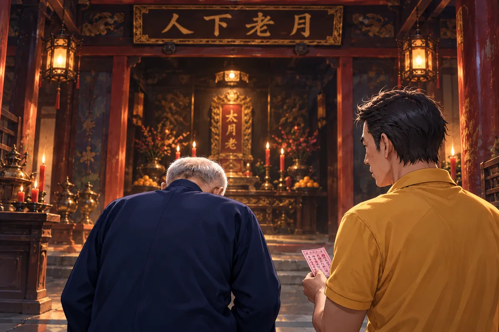

評審席上，月老試圖換位。
哈索爾要他靠近，愛染明王不肯救場，另一側的阿芙羅黛蒂又笑他想挨著自己。堂堂主辦者，坐得像隨時想從椅縫溜走。
觀眾席，大寶問語彤怎麼沒選繪畫組。
小雨說，她唱歌更厲害。
大寶本來還想問哪天聽過，小雨卻已望向臺邊。兩人說話的聲音慢下來，周圍有人找位置，座椅碰地、衣袖擦過，漸漸都成了上臺前的一層等待。
語彤站在側面，看不到觀眾的臉，只看到一片被燈分開的輪廓。她伸手摸掌心，剛才明明不覺得冷，現在卻有一點汗。
黑衣吉他手輕輕試過弦，抬眼示意。語彤點頭，再把呼吸慢慢收回。以前唱給熟人聽，可以笑錯，可以說重來；這裡每個人都正等下一個聲音，她不想讓自己因為害怕就先道歉。
她往臺中間走。燈落下來，地面的邊界清楚，眼前的人卻更看不見了。那反而讓她少找幾次誰在笑，終於能把注意力放回第一句。
燈暗下來。一位黑衣女吉他手坐好，指尖撥過弦。語彤站在臺中央，先吸了口氣。
她曾在池水裡喊到失去聲音。如今，所有人的目光停在她身上，等待她把聲音送出去。
第一句唱起，廣場慢慢安靜。
起初還有人低聲說話，後面幾聲便停。吉他音從旁邊託過來，不搶她的呼吸，語彤因此敢把下一句放得更完整。
她沒有照著自己最會的地方，一開始便唱高。聲音沿著詞慢慢走，到了要停的地方，便真的留一點空。臺下有人往前傾，像想把那一點沒唱出來的也聽清。
她想起爸爸畫草圖時說過，線不必一次用力到底，有的地方輕，整張才會站住。聲音也是這樣，她過去沒特別想過，今天卻忽然懂得，自己不必為了被看見，讓每一句都一樣大。
手心的汗沒有消，她握著，沒再看。那個在水下無法呼吸的記憶仍在身上，卻沒有把眼前這一口氣也全拿走。語彤唱下去，終於不再計算還剩多少句。
她沒有急著讓誰感動。聲音有輕的地方，有用力忍住又放開的地方，像帶著那些沒能完成的日子，仍往前走。
小雨不再說話。大寶也把身子坐正。
評審席有人猛地抬起手，驚呼這是一直在找的聲音。其餘神明望著舞臺，方才的爭執忘得乾乾淨淨。

語彤唱到最後，手心都是汗。
臺下的掌聲湧過來。她抬起頭，沒有先去摸胎記，沒有先確認誰在嘲笑。
最後一個音散去，她站著，一時不知道腳該先往哪邊動。演唱的時候還能跟著下一句走，結束了，四周的聲音忽然全朝自己來，反而更讓人緊張。
她看見小雨舉手，看見大寶正在拍，模糊的觀眾席終於有了幾張她認得的臉。那些人在來這之前已經知道她怎樣難過，如今望過來，卻不只是同情。
語彤想笑，嘴角先抖了一下，隨即又點頭道謝。黑衣吉他手起身，她轉向對方，再向臺下。
評審那聲驚呼仍留在耳邊，她不太敢想真的是說自己，直到有人重新提起名字，才慢慢確信。
走下臺時，腳比上來時輕一點。她仍怕說錯，仍不知道結果，卻第一次沒有為了讓別人安心，先說自己其實沒那麼好。
她只是站著，讓大家聽見她。
＊ ＊ ＊
愛神們都想收語彤。
她卻找到正在掃地的月老，說想跟他學文印。
神明掃的是祭典過後的地面，紙片和零星的雜物聚到一起。他見她過來，以為要幫忙，先把掃帚往旁邊讓；語彤卻站在他面前，沒有拿。
「我要選你。」
他說剛才聽見了，可還有幾位比自己認真。語彤搖頭，怕他真把這句當推辭，便把不想離開、想學的東西一件件講清。
月老看她，臉上的玩笑慢慢少了一點。他不是沒見過拜師的人，很多人想要神力，想得到比生前更多的本事；她的理由裡，卻先放著別人的分離。
語彤說完，才不好意思，問是不是太貪心。她仍恨，仍不知道怎樣才算完全善良，如今卻又想幫相愛的人，總像有兩種自己站在一起。
月老沒有讓她先挑一個，問她知道神為什麼喜歡幫人嗎。
兩位女神讓她有點怕，明王很好，可她不想離開這裡。最重要的，她想幫相愛的人不再分開。
月老停下掃帚。
他說，人類執著的樣子，會讓神想起自己也曾是人的時候。
＊ ＊ ＊
記憶深處，有牢門開鎖的聲音。有人要放右庶長逃走，因為明日便將車裂。他想到家中的娘子，也想到放他的人將付出的代價，終究沒有跨出那一步。
＊ ＊ ＊
語彤靜靜聽。
那個牢門的故事只有一段。說到沒有逃，月老便停，掃帚靠在手邊，地上的紙片還等著收。
語彤原本想問後來，抬眼看他，卻發現這不是一句可以靠著好奇立即追下去的話。師父年紀看起來輕，講這些時卻有很長的停頓，像眼前和過去各有一處他還得顧。
她低頭，把腳邊的紙拾起來，放到旁邊。他看一眼，又笑，問現在是不是願意掃地了。
她說本來就可以掃，別以為她選師父是因為不知道要工作。
這句說得快，終於把空氣裡的重挪開一點。月老讓她以後別後悔，她便點頭，答得比參加比賽還確定。
明王拖行李過來，語彤站直，知道一場比畫畫的緣分也走到該道別的時候。
愛染明王拖著行李來告別，說若跟他走，就不用掃地。語彤笑，他便送出仿製甘露寶瓶。
喜歡的飲料放一天，會成為治癒靈魂的藥，也許能去除魔性。
原來他早在作畫時察覺了。
但他相信她善良。
語彤望著瓶子，指尖沿著邊緣慢慢移。方才他講飲料、講一天，像普通的甜食做法，後面卻有治癒靈魂這麼大的事。
她問真能去魔性嗎，明王說應該，沒把每件事情都答成一定。他給的是自己煉的仿製品，對效果仍留了幾分保留。
語彤原以為魔性被看見就得解釋，解釋爸爸、解釋辣雞、解釋自己不是想傷人。明王卻先講相信，沒讓她把那場死亡再說一遍，才準收下禮物。
她道謝，認真得聲音都低了。神明轉而邀她去日本，提三味線，她眼睛便跟著亮，又問真可以學嗎。
明王笑，像這才是一個徒弟該繼續追問的事情。即使她選的是別的師父，有些教人的好意也不必因此全部收回。
明王邀她去日本，往後教她三味線。語彤接住瓶子，道謝。她以為必須藏好的那一部分，竟沒有讓這位神明把好意收回。
＊ ＊ ＊
林伯伯在業鏡羅漢殿，抽到第六十一籤。
他來得慢，走到能坐的位置，先把呼吸放穩。廟裡有人進出，香氣貼在衣服上，比手機裡查到的那幾個字更真實。
夢裡女兒說的神，原來在這裡。林伯伯望向殿內，心裡有許多話，合掌以後，卻只先報名字，報女兒的名字。那些打官司、找證據、擔心柏宏的事，沒有一件輕，可若只夠求一樣，他還是要先讓孩子別痛。
籤落出來，他撿起，看清數字。六十一，在他想來沒有什麼特別，只是一支等人解釋的籤。
雨是在他低頭讀時變大的。屋外一陣急響，原本還能走的路被水蓋住，他沒帶傘，便坐回廊下。廟公問解籤，他把紙遞去，仍以為接下來的不過是一段看不太懂的詩。
雨忽然下大。廟公來解籤，一看到數字，便請他跟著走。
神明上個月託夢，要蓋月老廟，金身由一位拿六十一籤的師傅雕。
林伯伯問，抽到這支的人難道很少？
「我們只有六十支籤。」

林伯伯先看籤紙，接著看廟公，像得確認兩個東西沒有被自己聽錯。對方說神明上個月就交代，來的人帶六十一，金身便由他做。
老人不是不信，卻很難立即把這個人說的師傅和自己放在同一個位置。自己只是女兒不在後，想找一處能問好不好的地方；怎麼走進來，竟還有一件早就等著自己做的工作。
他問尺寸，問造型，說到自己懂的事，聲音終於穩一些。廟公讓他先把籤詩看清，他便又低頭。
字裡藏著女兒的話，一個個連起來，他的手慢慢停住。林伯伯揉眼，再讀，怕看錯，怕自己太想她，便把每件事都看成女兒留的痕跡。
廟公沒有催。雨在屋簷下拉成長線，老人握著那支本來不該有的籤，久久沒能放下。
他低頭，反覆讀詩。字句裡藏著女兒與自己的牽掛。他合掌，不求多大的富貴，只求彤彤無病無痛，別再受苦。
地府裡，月老說這座廟是拜師禮。有神牌，語彤便能穿梭陰陽，也能受香火，更快累積功德。
語彤聽到一半，已哭出來。
她抱住師父。月老忙叫她別學哈索爾，免得粉絲生氣，話還沒說完，便聽見她小小聲地問。
「我抱不到爸爸，借我抱一下。」
月老原本還準備接一句玩笑，聽見爸爸，便把那半句收回。語彤抱得不很用力，像仍記得眼前是神，動作大了會不好；可肩膀一直抖，已經沒有別的地方能藏。
他沒有像平常躲哈索爾那樣往後退，只站著，等她把這一回哭完。
語彤說謝謝，幾個字被呼吸切得斷斷續續。她從來到這裡，想做的都是少麻煩、快適應，像只要工作夠好，爸爸便不用再為自己擔心。現在師父卻讓爸爸也有一件能做的事，讓他不必只坐著等壞人的訊息。
她想問什麼時候能去看，又想到廟還沒好，便把急收下來。月老說有神牌後能穿梭，讓她先認真學，免得有地方跑就不來上班。
語彤終於笑了一下，仍沒有立即放手。
他沒有再退。
雨落在人間屋簷。林伯伯把籤紙收進口袋，問廟公什麼時候可以來量神像的尺寸。